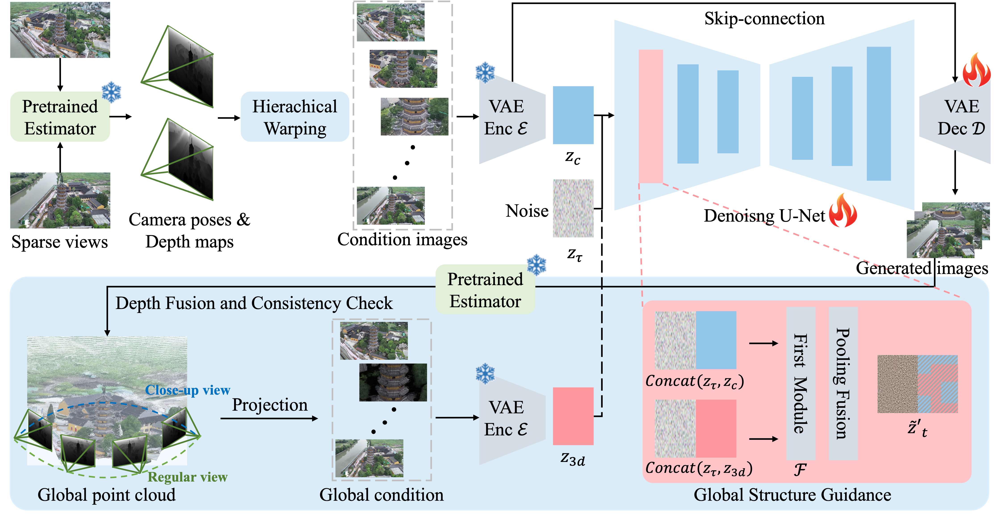

Abstract
Reconstructing 3D scenes and synthesizing novel views from sparse input views is a highly challenging task.
Recent advances in video diffusion models have demonstrated strong temporal reasoning capabilities, making them a promising tool for enhancing reconstruction quality under sparse-view settings.
However, existing approaches are primarily designed for modest viewpoint variations, which struggle in capturing fine-grained details in close-up scenarios since input information is severely limited.
In this paper, we present a diffusion-based framework, called CloseUpShot, for close-up novel view synthesis from sparse inputs via point-conditioned video diffusion.
Specifically, we observe that pixel-warping conditioning suffers from severe sparsity and background leakage in close-up settings.
To address this, we propose hierarchical warping and occlusion-aware noise suppression, enhancing the quality and completeness of the conditioning images for the video diffusion model.
Furthermore, we introduce global structure guidance, which leverages a dense fused point cloud to provide consistent geometric context to the diffusion process, to compensate for the lack of globally consistent 3D constraints in sparse conditioning inputs.
Extensive experiments on multiple datasets demonstrate that our method outperforms existing approaches, especially in close-up novel view synthesis, clearly validating the effectiveness of our design.
Methodology

Overview. Our pipeline takes two sparse input views and is capable of synthesizing fine-grained novel views under close-up settings using a point-conditioned video diffusion model.
First, a pretrained estimator is applied to obtain depth maps and camera parameters from the input images.
Second, we introduce two effective modules, hierarchical warping and cclusion-aware noise suppression, to enhance the sparse and noisy conditioning images, especially in the close-up setting.
Third, we perform a multi-view consistency check to construct a global point cloud, which is projected into target views to provide global structure guidance for the denoising U-Net.
Finally, the generated novel views, together with the reference inputs, are used to supervise 3DGS for photorealistic and detail-preserving 3D reconstruction.